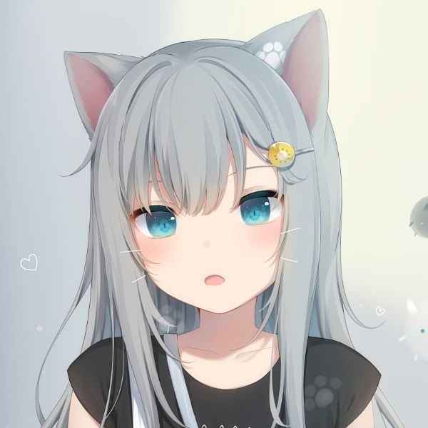
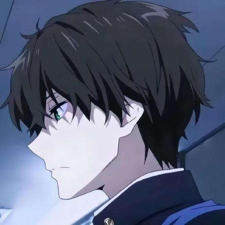

为服务器辛勤付出的运营团队
update:25.4.15
AdinTS & William(huaji)
昵称:AdinTS，游戏名：AdinTS
现任TSM服务器服主，并在2024年一手建立了TSM服务器 成为了一名优秀的服主，经历了一年的开服失败的经验，不会生电开生电服的阿丁 创建了这完美的TSM。有时也会策划服务器的一些活动。
昵称:William(huaji)，游戏名：William_huaji
现任TSM服务器管理，服务器最强管理，前HuajiCraft生存服服主，HuajiCraft在22-23年开服失败后 在24年共同发展TSM服务器，有着非常高的技术力，擅长Python、Html、CSS、C++、JAVA以及视频制作，一般会负责服务器的宣传工作，非常擅长编写代码，为TSM编写Mod、插件。目前主要在bilibili作为各种题材UP